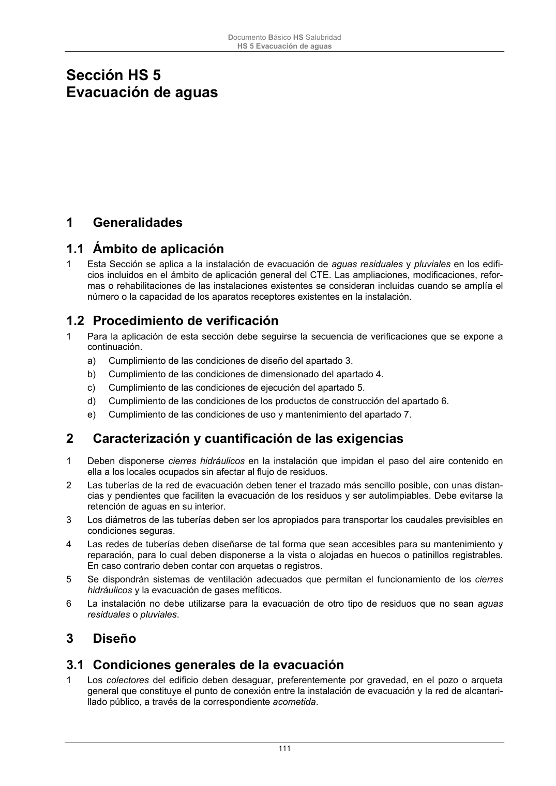

DB-HS · Caracterización y cuantificación de las exigencias · versión 2022-06-14 · capa oficial
Formatos: JSON compacto · Markdown · PDF fuente
Ámbito del documento · texto del ámbito · documento y tablas
ID técnico a0254 · PDF pág. 111 · jerarquía no validada por persona · contrastado con el literal de la página 111 (candidato tipográfico); no validado por persona · padre: a0253
Caracterización y cuantificación de las exigencias 1 Deben disponerse cierres hidráulicos en la instalación que impidan el paso del aire contenido en ella a los locales ocupados sin afectar al flujo de residuos. 2 Las tuberías de la red de evacuación deben tener el trazado más sencillo posible, con unas distan- cias y pendientes que faciliten la evacuación de los residuos y ser autolimpiables. Debe evitarse la retención de aguas en su interior. 3 Los diámetros de las tuberías deben ser los apropiados para transportar los caudales previsibles en condiciones seguras. 4 Las redes de tuberías deben diseñarse de tal forma que sean accesibles para su mantenimiento y reparación, para lo cual deben disponerse a la vista o alojadas en huecos o patinillos registrables. En caso contrario deben contar con arquetas o registros. 5 Se dispondrán sistemas de ventilación adecuados que permitan el funcionamiento de los cierres hidráulicos y la evacuación de gases mefíticos. 6 La instalación no debe utilizarse para la evacuación de otro tipo de residuos que no sean aguas residuales o pluviales. 3

PDF fuente redistribuible: copia fiel enlazada en esta página (SHA256 verificado).